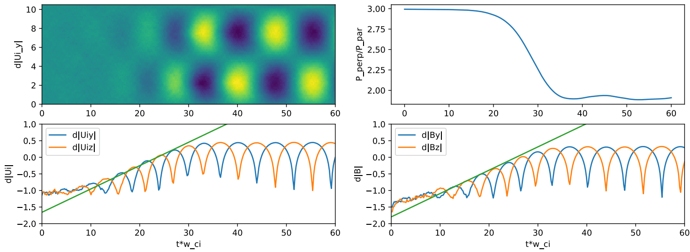
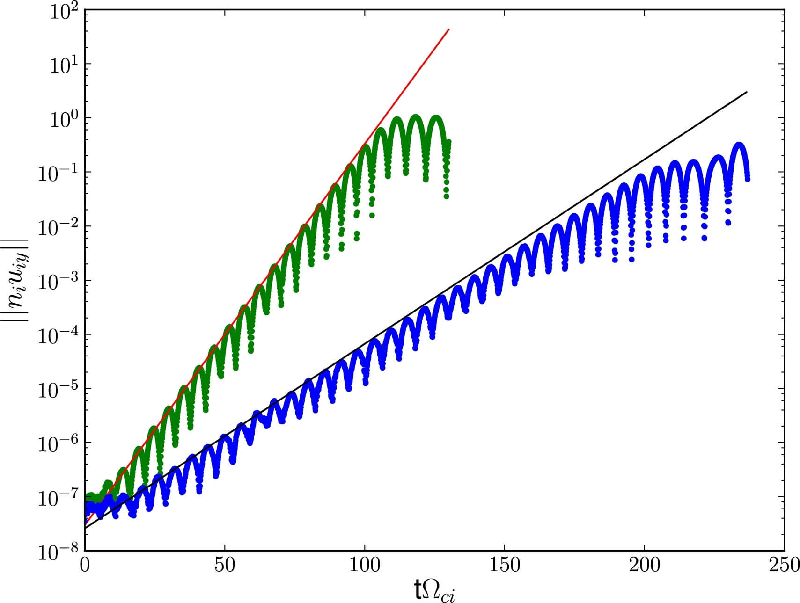

24 Hybrid Methods
The hybrid model is valid for low-frequency physics with \(\omega\sim\Omega_i\) and \(kr_{Li}\sim 1\) (wavelength \(\lambda\sim 6r_{Li}\)), where \(\omega\) is the wave frequency, \(k\) is the wave number, \(\Omega_i\) is the ion gyrofrequency, and \(r_{Li}\) is the ion Larmor radius. For this range of wave frequency and wavelength, the ion kinetic physics in the near-Earth instabilities are resolved with grid sizes \(\sim r_{Li}\) or ion inertial length \(d_i\). The finite ion gyroradius effects are resolved with particle time steps \(\Delta t\) much smaller than the gyroperiod.
A typical time step in a global hybrid magnetosphere model is \(0.05\,\Omega_0^{-1}\), where \(\Omega_0\) is the upstream (solar wind) ion gyrofrequency. For IMF \(B_0\sim10\,\text{nT}\), \(\Omega_0 \sim 1\,\text{rad/s}\), which corresponds to \(f_0\sim 1/2\pi\,\text{s}^{-1}\). Based on in-situ observations, the typical ion inertial length in the tail is \(\sim 0.2\,\text{R}_\text{E}\), but smaller near the dayside magnetopause. Therefore usually discrete grid size \(\Delta x = 0.1\,d_i\) is barely enough to resolve tail ion kinetic dynamics but not dayside kinetic structures.
24.1 Classical Hybrid Model
Define the electric charge density \(\rho\) and current density \(\mathbf{J}\) as \[ \rho = \sum_s q_s n_s - en_e \]
\[ \mathbf{J} = \sum_s q_s n_s \mathbf{V}_s - e n_e \mathbf{V}_e \] where \(q_s, n_s, \mathbf{V}_s\) are the charge, number density and bulk velocity of ion species s calculated by taking moments of the distribution function \[ n_s = \int \mathrm{d}^3 v f_s(\mathbf{r}_s,\mathbf{v}_s,t) \] \[ \mathbf{u}_s = \frac{1}{n_s}\int \mathrm{d}^3 v \mathbf{v}_s f_s(\mathbf{r}_s,\mathbf{v}_s,t) \] or in the corresponding discrete forms where the distribution function is represented as a group of macro-particles with a specific shape function. In this way it behaves more like a particle cloud.
The crucial assumption in the hybrid model is the quasi-neutrality, that is, the electrons move fast enough to cancel any charge-density fluctuations and \(\rho=0\) is always satisfied. By assuming quasi-neutrality, we can
- avoid solving the conservation equations for electrons
- avoid solving the Maxwell’s equations entirely and instead use the generalized Ohm’s law instead
The electron density thus can be written by using ion densities \(n_e \approx n_i \equiv \sum_s q_s n_s /e\). In addition, the electron bulk velocity may also be eliminated using Ampère’s law \[ \mathbf{J} = \mu_0^{-1}\nabla\times\mathbf{B} \] and the relation \[ \mathbf{v}_e = \mathbf{v}_i - \mathbf{J}/n_e e \tag{24.1}\]
The basic equations used in the conventional PIC hybrid model first has a particle pusher for individual ions \[ \frac{\mathrm{d}\mathbf{x}_j}{\mathrm{d}t} = \mathbf{v}_j \]
\[ \frac{\mathrm{d}\mathbf{v}_j}{\mathrm{d}t} = \frac{q_j}{m_j}\big( \mathbf{E} + \mathbf{v}_j \times \mathbf{B} \big) \] where the subscript \(j\) and \(e\) indicate the indices for individual ions and the electron fluid and other notations are standard. The lowercase velocities are velocities for each macro-particle.
Alternatively, if we rely on a Vlasov system, we directly solve for the distribution function \(f(\mathbf{r}_s, \mathbf{v}_s, t)\) from the Vlasov equation \[ \frac{\partial f_s}{\partial t} + \mathbf{v}_s\frac{\partial f_s}{\partial \mathbf{r}_s} + \mathbf{a}_s\cdot \frac{\partial f_s}{\partial \mathbf{v}_s} = 0 \] where \[ \mathbf{a}_s = \frac{q_s}{m_s}(\mathbf{E}+\mathbf{v}_s\times\mathbf{B}) \]
The generalized Ohm’s law is used to determine the time evolution of the electric field, derived from the electron momentum equation assuming \(m_e \rightarrow 0\), \[ \mathbf{E} = - \mathbf{V}_i \times \mathbf{B} + \frac{1}{\mu_0 n_i e}(\nabla\times\mathbf{B})\times\mathbf{B} - \frac{1}{n_i e}\nabla\cdot\overleftrightarrow{P}_e + \eta \mathbf{J} \tag{24.2}\] where the current in the Hall term has already been replaced by the curvature of B. The last term can either represent collision/physical resistivity, or artificial resistivity/numerical diffusion.
The magnetic fields evolve according to Faraday’s law \[ \frac{\partial \mathbf{B}}{\partial t} = -\nabla\times\mathbf{E} \]
Finally, by determining the electron pressure tensor by using an appropriate equation of state, the evolution of the system can be followed in time. For example, let \(\overleftrightarrow{P}_e = P_e \overleftrightarrow{I}\) where \(P_e\) is the isotropic scalar electron pressure. In the simplest form \[ P_e = n_e k_B T_e \] where \(n_e \approx n_i\) and \(T_e=T_i\). Note however in a plasma electron pressure is usually higher than ion temperature, so this is a very crude assumption. Another commonly used assumption is an adiabatic process \[ P_e = n_e^\gamma k_B T_e = n_0(n/n_0)^\gamma k_B T_{e0} \] where \(\gamma=5/3\) is the adiabatic index for a monatomic ideal gas.
A more complete review is given by (Winske et al. 2023) for the hybrid-kinetic model assuming massless electrons. The essential problem in all hybrid algorithms is how to calculate the electric field at the next time step.
24.1.1 Pros and Cons
Strengths:
- No approximations to ion physics.
- Valid for \(\omega/\Omega_i \sim kr_i \sim 1\).
- No issues for high-\(\beta\) regimes.
- Simple implementation of particle push that can be readily optimized.
- Removes stiffest electron scales.
Limitations:
- Need to resolve ion gyrofrequency.
- Stiff EMHD whistler waves \(\Delta t_{CFL}\sim \Delta x^2\).
- No electron Landau damping.
- Explicit time-stepping schemes can be complex.
- No existing method conserves momentum or energy.
24.2 Finite Electron Inertia
The conventional hybrid simulation model dealing with kinetic ions and a massless charge-neutralizing electron fluid is known to be susceptible to numerical instability due to divergence of the whistler-mode wave dispersion, as well as division-by-density operation in regions of low density. The Alfvén wave at short wavelength comparable to ion inertia length has dispersion due to the decoupling between ion and electron dynamics. There thus appears the whistler mode whose frequency diverges as \(\omega \propto k^2\). This means that the maximum phase velocity in the system increases rapidly without bound, implying numerical difficulty. The division-by-density issue originates from Equation 24.1 and appears in the Hall and electron pressure gradient terms. Consequently, a pure vacuum region is not allowed to exist in the simulation domain unless some ad hoc technique is used.
On the other hand, this can be restated as hybrid simulations with massless charge-neutralizing electrons are unrealistic if whistlers are involved. Either people use full particle models, or try to incoporate finite electron mass into the conventional hybrid model.
The finite electron inertia correction is proposed to solve the whistler-mode wave dispersion issue. The conventional way to include a finite electron inertia correction into the hybrid model is to introduce the following so-called generalized electromagnetic field \(\widehat{\mathbf{E}}, \widehat{\mathbf{B}}\), defined as \[ \widehat{\mathbf{E}} = \mathbf{E} - \frac{\partial}{\partial t}\big( \frac{c}{\omega_{pe}^2}\nabla\times\mathbf{B} \big) \]
\[ \widehat{\mathbf{B}} = \mathbf{B} + \nabla\times\big( \frac{c^2}{\omega_{pe}^2}\nabla\times\mathbf{B} \big) \] in which the terms proportional to \(\nabla\times\mathbf{B}\) represent electron inertia correction.
From the equation of motion for the electron fluid, it may be shown that \[ \widehat{\mathbf{E}} = - \mathbf{V}_i \times \mathbf{B} + \frac{1}{n_i e}(\nabla\times\mathbf{B})\times\mathbf{B} - \frac{1}{n_i e}\nabla\cdot\overleftrightarrow{P}_e - \frac{m_e}{e}(\mathbf{V}_e\cdot\nabla)\mathbf{V}_e \] which is similar to the generalized Ohm’s law but now with the last term which also represents the correction. \(\mathbf{V}_e\) is obtain from Equation 24.1.
Given the generalized electric field \(\widehat{\mathbf{E}}\), one can advance the generalized magnetic field \(\widehat{\mathbf{B}}\) by using Faraday’s law, which can be easily checked to satisfy \[ \frac{\partial \widehat{\mathbf{B}}}{\partial t} = -\nabla\times\widehat{\mathbf{E}} \]
Further simplifications are commonly adopted; for example, the electric field correction term and electron-scale spatial variation of density are often ignored. In this case, the magnetic field may be recovered by solving the equation \[ \widehat{\mathbf{B}} = \big( 1 - \frac{c^2}{\omega_{pe}^2}\nabla^2 \big)\mathbf{B} \] and \(\widehat{\mathbf{E}} = \mathbf{E}\) is assumed. The nice feature with this approach is that the correction can be implemented as a post process to the each integration step of a standard procedure.
24.3 Low Density Treatment
Apparently new methods are still being proposed because the inclusion of electron inertia term along cannot solve all the issues. (Amano, Higashimori, and Shirakawa 2014) suggests another way to solve for the electric field \[ (\omega_{pe}^2 - c^2\nabla^2)\mathbf{E} = \frac{e}{m_e}\big( \mathbf{J}_e \times\mathbf{B} - \nabla\cdot\overleftrightarrow{P}_e \big) + (\mathbf{V}_e\cdot\nabla)\mathbf{J}_e + \eta\mathbf{J} \] which can be reduced to the Laplace equation in near-vacuum region, presenting no numerical difficulty.
Besides, the electron velocity is redefined \[ \mathbf{V}_e = \frac{\mathbf{J}_e}{\text{max}(\rho_e, \rho_{e,min})} \] where the minimum density \(\rho_{e,min}\) is an artificially set value.
In a hybrid system, the maximum phase velocity is the electron Alfvén speed, which goes to infinity when \(m_e \approx 0\). However, when doing calculations we only have ion Alfvén speed \[ v_{p,max} \simeq \frac{1}{2}\frac{B}{\sqrt{\mu_0 n_e m_e}} = \frac{1}{2}V_{A,i} \sqrt{\frac{m_i}{m_e}} \]
To keep the maximum phase velocity always below the CFL condition, one may use a modified electron mass ratio \(m_e^\prime\) defined as \[ \frac{m_e^\prime}{m_i}=\text{max}\Big( \frac{m_e}{m_i}, V_A^2\big( \frac{\Delta t}{2\alpha \Delta x} \big)^2 \Big) \] instead of the physical electron mass \(m_e\). Here \(V_A\) is the Alfvén speed calculated from the local density and magnetic field, and \(\alpha\) is the maximum allowed Courant number (\(\le 0.5\)).
24.4 Comparison with Hall MHD
The zeroth and first moments of the ion Vlasov equation are \[ \begin{aligned} \frac{\partial n}{\partial t} + \nabla\cdot(n\mathbf{u}_i) = 0 \\ \frac{\partial mn\mathbf{u}_i}{\partial t} + \nabla\cdot\Big[ mn\mathbf{u}_i\mathbf{u}_i - \frac{\mathbf{B}\mathbf{B}}{\mu_0} + \frac{B^2}{2\mu_0}\mathbf{I} + \overleftrightarrow{P} \Big] = 0 \end{aligned} \]
The difference between Hall MHD and hybrid model is the treatment of the pressure tensor term. For Hall MHD with constant \(T_{i0}/T_{e0}\), \[ \overleftrightarrow{P} = p_e(1 + T_{i0}/T_{e0})\mathbf{I} \]
For hybrid models, \[ \overleftrightarrow{P} = p_e\mathbf{I} + \int m_i f_i \mathbf{w}\mathbf{w}\mathrm{d}\mathbf{w} \]
Thus Hall-MHD is a “cold-ion” model in the sense that it does not include ion finite Larmor radius (FLR) or other kinetic effects from warm distribution functions.
24.5 Normalization
There are five basic quantities in the hybrid model (length, mass, time, current density, and number density???) and three physical constants (\(\mu_0,q,m\)). If we add temperature, then correspondingly \(k_B\) would appear. Usually even though the particle mass is a constant, we treat it as a parameter to represent a proton system or electron system or other particle system. Thus we need three (\(5-2\)) independent reference quantities for the normalized units in a hybrid model. For instance, We can take a magnetic field scale \(B_0\), number density scale \(n_0\), and mass scale \(m_0\). The general variable transformation from the original units to normalized units is \[ \chi = \chi_0\tilde{\chi} \] where \(\tilde{\chi}\) denote the variable in the normalized units and the scale \(\chi_0\) shall be in the original units (e.g. SI).
Typically we use the inverse of gyrofrequency for the time scale \[ t_0 = \Omega_{c0}^{-1} = \frac{m_0}{e B_0} \]
and Alfvén speed for the velocity scale \[ v_0 = v_A = \frac{B_0}{\sqrt{\mu_0 n_0 m_0}} \]
Then the length scale is taken to be the ion skin-depth, or inertial length \[ L_0 = d_i = \frac{c}{\Omega_{c0}} = \sqrt{\frac{m_0}{\mu_0 e^2 n_0}} \]
A common trick we can use to speed up the simulation is to artificially increase the ion mass such that the length scale is increased \(\propto \sqrt{m_0}\). For example, in many global hybrid Earth magnetosphere models, \(d_i\) in the upstream solar wind is artificially increased to \(0.1\,\text{R}_E\) (by increasing the ion mass), which is 6.8 times the realistic \(d_i=0.015\,\text{R}_E\) for \(n_{sw}=6\,\text{amu/cc}\). If our grid resolution is \(0.05\,\text{R}_E\approx 300\,\text{km}\) (which is common as of 2020s), we will have about 10 points per ion-scale wave, which is enough to resolve the ion-scale kinetics.
However, a consequence of this scaling due to computational limitation must be emphasized. The reference Alfvén speed \[ V_{A0} = d_{i0}\Omega_{i0} \]
will also be larger than reality since we artificialy increase \(d_{i0}\) but not \(\Omega_{i0}\).
Note the difference between gyrofrequency and frequency, which differs by a factor of \(2\pi\): \[ \omega = 2\pi f \]
I once made a mistake in dealing with a code that uses SI units. You may wonder how come the ion inertial length is defined by speed of light divided by the plasma ion frequency in the unit of \([\text{rad}/\text{s}]\), and time scale in the unit of \(\Omega_i^{-1}\) which is \([\text{s}/\text{rad}]\). In practice, we do not include \(2\pi\) in neither of them!
The pressure scale can be equivalently derived from the magnetic pressure or dynamic pressure \[ P_0 = \frac{B_0^2}{\mu_0} = \rho_0 v_0^2 \] Note the drop of the factor of 2 here: it is then kept in the dimensionless equations, e.g. \(p_B^\prime = {B^\prime}^2/2\).
The temperature scale is then \[ T_0 = \frac{p_0}{n_0 k_B} = \frac{B_0^2}{2\mu_0 k_B n_0} \]
Note the factor of 2 appeared in the pressure and temperature scales: this is to make the derivations consistent. The unit conversions are summarized in Table 24.1.
Table 24.1: hybrid model unit conversion.
| Basic variable | Notation | Definition | Value |
|---|---|---|---|
| Magnetic field | \(B_0\) | \(B_0=B_\mathrm{ref}\) | \(1\times10^{-8}\,\mathrm{T}\) |
| Number density | \(n_0\) | \(n_0=n_\mathrm{ref}\) | \(1\times10^{6}\,\mathrm{m}^{-3}\) |
| Mass | \(m_0\) | \(m_0=m_i\) | \(1.67\times10^{-27}\,\mathrm{kg}\) |
| Derived variable | Notation | Definition | Value |
|---|---|---|---|
| Length | \(l_0\) | \(l_0=\sqrt{m_0/(\mu_0 e^2 n_0)}\) | \(2.28\times10^5\,\mathrm{m}\) |
| Velocity | \(v_0\) | \(v_0=B_0/\sqrt{\mu_0m_in_0}\) | \(2.18\times10^5\,\mathrm{m}\cdot\mathrm{s}^{-1}\) |
| Time | \(t_0\) | \(t_0=m_i/(e*B_0)\) | \(1.04\,\mathrm{s}\) |
| Mass density | \(\rho_0\) | \(\rho_0=n_0/m_i\) | \(1.67\times10^{-21}\,\mathrm{m}^{-3}\) |
| Pressure | \(p_0\) | \(p_0=\rho_0v_0^2\) | \(7.96\times10^{-11}\,\mathrm{N}\cdot\mathrm{m}^{-2}\) |
| Temperature | \(T_0\) | \(T_0=p_0*m_i/(k_B\,\rho_0)\) | \(5.76\times10^6\,\mathrm{K}\) |
24.6 Numerical Stability
Nonlinear numerical simulations typically need some dissipation for stability. This is achieved either via:
- Explicit terms in equations (“physical dissipation”).
- Upwinding of advective terms (implicit dissipation via discretization)
Hybrid models usually follow 1) by adding dissipation in Ohm’s law: \[ \mathbf{E} = \underbrace{\mathbf{E}^\ast}_{\text{frictionless }\mathbf{E}} + \underbrace{\eta\mathbf{j}}_{\text{resistivity}} - \underbrace{\eta_H \nabla^2\mathbf{j}}_{\text{hyper-resistivity}} \]
The reason that we need hyper-resistivity is because the Hall term is badly behaved (stiff?). Slide 33 Stainer??? The hyper-resistivity term has a similar form of an electron collisional viscosity \(\eta_H\nabla^2\mathbf{u}_e\). But the coefficient is too large for space, sometimes argued as “anomalous viscosity”.
Extra care shall be taken for conservation when including the frictional terms. For momentum conservation, we should use \(\mathbf{E}^\ast\) for the macro-particle pusher or Vlasov solver, and only use \(\mathbf{E}\) for updating \(\mathbf{B}\). For energy conservation, it requires a separate electron pressure equation with frictional heating \(H_e = \eta j^2 + \eta_H \nabla \mathbf{j}:\nabla\mathbf{j}\) and heat flux \(\mathbf{q}_e\): \[ (\gamma-1)^{-1}\Big[\frac{\partial p_e}{\partial t} + \nabla\cdot(\mathbf{u}_e p_e) \Big] + p_e\nabla\cdot\mathbf{u}_e = H_e - \nabla\cdot\mathbf{q}_e \]
24.6.1 Finite Grid Instability
Imagine a scenario where cold ion beams move through uniform spatial mesh. It was shown by (Rambo 1995) that non-conservative (explicit) schemes are unstable for Ti /Te << 1 regardless of spatial resolution. The precise threshold in \(T_i /T_e\) and beam velocity depends on shape-function for macroparticles. This instability causes unstable (exponential) heating of ions until some saturation value and also violates momentum conservation. Implict momentum and energy conserving schemes are stable w.r.t. these instabilities.
24.7 Magnetosphere Inner Boundary Conditions
Inner boundary condition is often the most tricky part in magnetopshere modeling. In Angeo3D [Lin+ 2014], the inner magnetosphere (\(r<6\,\text{R}_\text{E}\)) is assumed to be dominated by a cold, incompressible ion fluid, which coexists with particle ions. The number density of the cold ion fluid is assumed to be \[ n_f = \frac{n_\text{eq}}{r^3}[1-\tanh(r-6.5)] \] where \(r\) is in the unit of \(\text{R}_\text{E}\), and \(n_\text{eq}=1000\,\text{cm}^{-3}\).
The inclusion of the cold ion fluid in the inner magnetosphere simplifies the conditions for the fluid-dominant low-altitude, inner boundary. Ion particles are set to be reflected at the magnetospheric inner boundary (e.g. \(r=3.5\,\text{R}_\text{E}\)). This simple reflection of the ion parallel velocity \(\mathbf{v}_{i\parallel}\) means that loss cone effects are omitted. For a particle distribution with an isotropic pitch angle distribution in a dipole field, the particles in a full loss cone are only 0.3% of the total, which is reasonably neglected. \(\mathbf{B}\) is assumed to maintain the dipole field values at the inner boundary. The ionospheric conditions (1000 km altitude) are incorporated into the hybrid code, as in global MHD models (Raeder, Walker, and Ashour-Abdalla 1995). See Section 19.2.
24.8 Tests
24.8.1 Proton Cyclotron Anisotropy Instability
This is an electromagnetic and multi-ion verification test. We have an 1D-3V electromagnetic instability driven by \(p_{i\perp}/p_{i\parallel} > 1\). Maximum growth happens at \(\mathbf{k}\times\mathbf{B}=0\) with a finite real frequency. The instability threshold is \[ \frac{P_\perp}{P_\parallel} - 1 \approx \frac{S}{\beta_\parallel^{0.4}} \] with \(S\sim 1\) (Gary 1993).
Both \(\mathbf{k}\) and \(\mathbf{B}_0\) are parallel to the x-axis. For the initial perturbation, we choose \(k_x \Delta x = 0.065\). We set an 1D simulation with 64 cells, \(\Delta t \Omega_{ci} = 0.01\), dissipation=0. The nominal simulation parameters are: \[ \beta_\parallel = 1, \frac{T_\perp}{T_\parallel} = 3, \frac{L_x}{d_i} = 10.5, \frac{T_e}{T_\parallel} = 1, \gamma = \frac{5}{3} \]

PCAI results:
- Transverse velocity and magnetic field components grow from noise (left-hand Alfvén waves).
- Agree with linear theory for these parameters (\(\gamma/\Omega_{ci} =0.162\)).
- Pressure anisotropy decreases via wave-particle interaction until saturation.
When we add a 20% density fraction of a minor species of alpha particles (\(\text{He}^{2+}\)), the growth rate is found to be smaller. \[ Z_\alpha = 2, M_\alpha = 4, \frac{T_{\alpha\parallel}}{T_{p\parallel}} = 2, \frac{T_{\alpha\perp}}{T_{\alpha\parallel}} = \frac{T_{p\perp}}{T_{p\parallel}} = 3, \frac{N_\alpha}{N_p} = 0.2, Z_\alpha N_\alpha + Z_p N_p = 1 \]

The growth rates across a range of \(\beta\) and anisotropy can be computed and compared with a linear dispersion solver, e.g. HYDROS.
24.8.2 Landau Damped Ion Acoustic Wave
The fundamental electrostatic mode in the hybrid-PIC model is the ion acoustic wave. This is also driven by pressure perturbations. In fluid models (e.g. Hall MHD), this wave is undamped. However, in the hybrid-PIC, Landau resonance damps the wave and locally flattens ion VDF, which is analogous to electron Landau damping of Langmuir oscillations.
The dispersion relation is \[ \frac{dZ(\zeta)}{\mathrm{d}\zeta} = 2\frac{T_i}{T_e},\quad \zeta\equiv \frac{\omega-i\gamma}{kv_{\text{th},i}} \]

The nominal simulation parameters are: \[ T_i = 1/3,\, \gamma=5/3,\, c_s = \sqrt{\gamma T_e/m_i} = 1,\, k_x = \pi/8,\, \delta n = 2\times 10^{-2} \]
Results for nominal parameters
- Damping rate: \(\gamma = -0.0932\).
- Initial perturbation damps to noise floor. Noise can be reduced by:
- Use more particles/cell (noise \(\sim 1/\sqrt(N_p)\)).
- Binomial smoothing/higher order shape functions.
- Using low-discrepancy quasi-Random numbers to seed particles (noise \(\sim 1/N_p\)).
- Most efficient: Delta-F (See Section 23.3).
24.8.3 Magnetic Reconnection Island Coalescence
Magnetic islands are 2D versions of flux-ropes. Here we set a self-driven reconnection problem of coupling of ideal island motion to micro-scale reconnection physics. Ion kinetic effects are crucial in reconnection studies.
Unstable Fadeev island equilibrium: the magnetic field \(\mathbf{B}\) is given by \(\nabla\times\mathbf{A}\), where in this setup we only need \[ A_y = -\lambda B_0 \ln[\text{cosh}(z/\lambda) + \epsilon\cos(z/\lambda)] \] and the density is given by \[ n = n_0(1-\epsilon^2)/[\text{cosh}(z/\lambda) + \epsilon\cos(z/\lambda)]^2 + n_b \]
The pressure balance gives \[ \beta = \frac{2\mu_0 n_0 k_B (T_{i0}+ T_{e0})}{B_0^2} = 1 \]
The nominal simulation parameters are: \[ \lambda = 5d_i,\, \epsilon = 0.4,\, n_b = 0.2n_0,\, T_i/T_e = 1,\, \eta = 10^{-3},\, \eta_H = 5\times10^{-3},\, \gamma = 1 \] and for the numerical parameters, we have a 2D space with \(256\times128\) cells, 50 particles/cell, \(\Delta t\Omega_{ci} = 0.005\).

24.8.4 Collisionless Shock
This is a 2D magnetospheric shock problem, with a \(M_A = 11.4\) shock injected from the right (open) boundary and a reflecting left boundary to drive the collisionless shock.